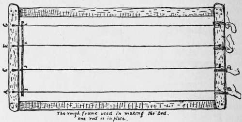
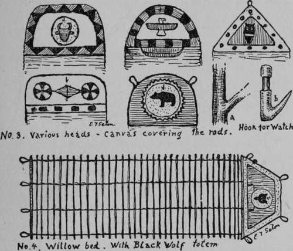
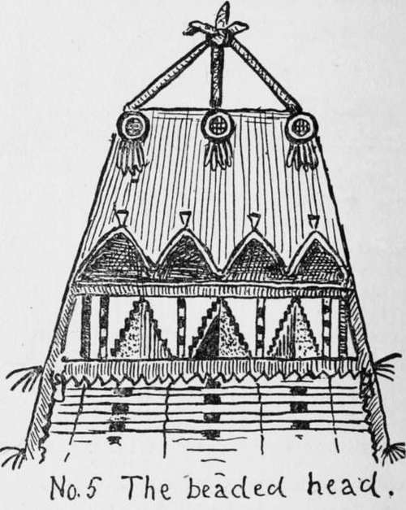
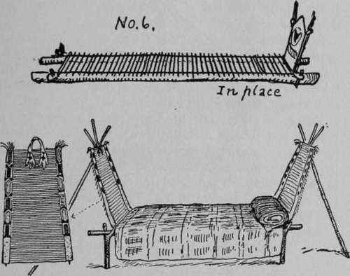

The Indian Or Willow Bed
Description
This section is from the book "The Book Of Woodcraft", by Ernest Thompson Seton. Also available from Amazon: The Book of Woodcraft.
The Indian Or Willow Bed
The only bed I know of which is light, portable, scoutlike, made of wildwood stuff that can be got anywhere, and costing nothing but a little labor, is the willow or prairie bed used by all the Plains Indians.
This is how it is made: On your first short hike to the country go to some stream bank or swamp, and cut about seventy straight rods of red willow (kinnikinik),gray willow, arrow-wood, or any straight shoots, each about as thick as a pencil, when peeled, except one or two that are larger, up to half an inch thick; and all thirty inches long. Tie them up in a tight bundle with several cords until you get time to work them. Peel them, cut a slight notch in the butt of each rod, three quarters of an inch from the end, and you are ready to make the bed.
And here I may say that some fellows, who could not get to the country to cut willow rods, have used the ordinary bamboo fishing-poles. These are sawed up in 30-inch lengths and split to the necessary thinness; the butt end yields four or even five of the splints, the top, but one. This answers well, and three poles furnish material enough for the bed. This is allowable because, though the stuff is not of our own woods, it is American; it grows in the Southern States. One or two fellows in town have made the bed of dowels from a furniture factory.
Now get a ball of cord, that will stand a 25-lb. pull, a ball of fine linen thread, and a piece of shoemakers' wax, to complete your materials.
If outdoors, you can stretch your cords, between two small trees about seven feet apart, but it is much easier if you make a rough frame of strips or poles seven feet by three inside to work on.
cut four pieces of the cord, each about twenty feet long.
Double each and tie a 3-inch hard loop in the middle. Twist these doubled cords and put them on a frame (cut No. 1), fastened to nails as at A B, the surplus cord wrapped around the frame, and the others as at C D E F G and H.
cut no. 1.
Take one of the heaviest rods, say a half-inch one, for a starter. With a pointed stick, open the two strands of the twisted cord, and set the rod tight against the knots I J K L.
Now set a second rod in place below the first, seeing that two twists of the string are between each road and that the space separating them is one inch. Keep alternating butts and tops. At each point, that is at four places on each rod, make a lashing of waxed thread, holding rod and cords together (No. 2). I have seen beds with only two lashings, that is, one at each end, but four lashings is the sound and safe plan.
When the rod-work is six feet long, it is time to taper off. Put in one big rod for a finish, and tie hard loops in the cords at this point. Then, using shorter rods, make a narrower part about eighteen inches high for a head. Finally, cover this head with a piece of brown khaki or canvas which should be decorated with the band's colors and totem, either painted or done in beadwork, or in colored cottons that are cut out and sewed on (Cuts Nos. 3 and 4).
It is well to add also a wooden hook for one's watch (a and b, cut No. 3) and a pocket for matches and money, etc., at night.
The Indians often elaborated these beds to a great extent when in permanent camps. Each rod was selected, perfectly straight, thinned at the butt end, to be uniform, and an extra piece added at the bed, head and foot, to curl up as end-boards. That at the head was elaborately decoresting on two 4-inch poles, which are set firmly twenty-six inches apart; and the bed is staked at the corners through the loops to hold it in place (cut No. 6). Cut No. 7 shows a fine specimen of an Arapaho bed all ready for use. When we can get no poles, we lay down a couple of boards or rods to carry the ends of the bed, and then dig the rated with symbols in beadwork. The illustration (No. 5) shows a beautiful beaded bed-head in my possession; not only the head, but the edges all around, are bound with red flannel.
When in use the bed is laid with the ends of the rods ground out in the middle. By means of two tall stakes the head part is held upright. When packed up the bed is rolled. It weighs about five pounds.
Of course, you always need as much under you as over you. Couched on such a natural spring mattress as the willow bed you sleep in perfect comfort.
No. 7. ARAPAHO BED OF WILLOWS. 14th ANN. Rep. Bur. Am. Ethn. P. 963.
For those who wish to complete its sumptuousness a rush or grass mat may be added. (See Camp Loom).
After long use the willows get bent, to prevent this the bed should be turned over every few days.
Continue to:
- prev: Indian Costume
- Table of Contents
- next: Indian Paints
Tags
bookdome.com, books, online, free, old, antique, new, read, browse, download